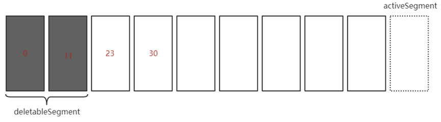
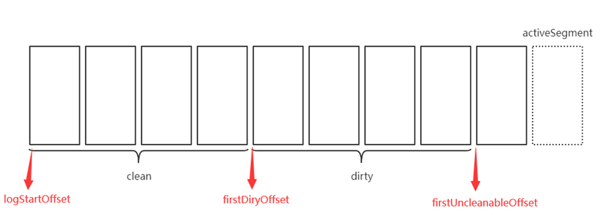

Kafka
Kafka: ZooKeeper协调的分布式消息系统
- 基于Scala语言编写的高性能、多分区、多副本
- Kafka高性能的原因：页缓存、顺序IO、零拷贝
具有以下特性：
- 消息中间件: 系统解耦、冗余存储、流量消峰、异步通信等
- 存储系统: 通过消息持久化和多副本机制实现消息落盘
- 流处理: 为流式处理框架提供可靠的数据来源和库
Kafka组成: 若干个Producer、Consumer、Broker和ZooKeeper集群
- Producer(生产者): 生产并发送消息到Broker(推送)
- Consumer(消费者): 从Broker订阅并消费消息(拉取)
- Broker(服务代理节点): 将从Producer收到的消息进行落盘
- ZooKeeper集群：管理Kafka集群的元数据
// Broker可看成单个独立的Kafka服务实例, 多个Broker组成个Kafka集群
如: Kafka集群构成
基础概念
主题(Topic): Kafka中消息归类单位
- Topic并不实际存在(仅逻辑上的概念)
- Topic可细分为多个Partition, 但Partition仅属于单个Topic
- 功能: Producer将消息发送到特定Topic, Consumer订阅Topic消费消息
分区(Partition): 组成Topic的单位(实际存储消息)
- Partition在存储层面可视为: 可被追加的日志文件
- 同一Topic下的不同Partition包含的消息是不同的
- Partition可跨Broker(Topic可跨Broker)
偏移量(Offset): 消息追加到Partition时分配的标志位
- Offset是消息在Partition中的唯一标识(保证Partition内的有序性)
- Offset不支持跨Partition(Topic无序)
如: 消息追加写入Partition
- 消息在发送到Broker之前, 都会先根据Partition规则分配到具体的Partition
- Topic的Partition应避免都属于单个文件(避免机器的I/O成为性能瓶颈)
Partition中2个特殊的Offset:
- HW(High Watermark): Consumer能拉取到消息的最大Offset
- LEO(Log End Offset): Partition下条消息写入的Offset
// ISR中最小的LEO为该Partition的HW(最慢的follower)
如: Partition中的特殊Offset
副本(Replica): Partition的冗余
- 功能: Kafka通过多副本机制提高容灾能力
- 副本之间分为：leader(主副本)、follower(从副本)
- 副本间仅存在一主多从关系, 且可实现自动故障转移
- Producer和Consumer只能和leader进行交互(follower仅进行消息同步)
如: Kafka的多副本交互
副本相关名词:
- AR(Assigned Replicas): 所有副本(包括leader)
- ISR(In-Sync Replicas): 与leader保持同步的副本(包括leader)
- OSR(Out-of-Synce Replicas): 与leader同步滞后过多的副本(数据不同步)
// 默认仅ISR中的副本才有资格选举为leader, 且负责动态管理ISR和OSR中的follower
延迟任务
时间轮(TimeingWheel): 以固定时间粒度为单位管理和调度事件的数据结构
- 时间跨度(tickMs): 时间轮构成的基本单位, 个数固定
- 表盘指针(currentTime): 指向当前所处的时间粒度
- 时间轮对于插入/删除操作的时间复杂度为O(1)
定时器(SystemTimer): Kafka中各类延迟操作的触发
- 本质: 基于时间轮机制和数组构成的环形队列
- 定时任务项(TimerTaskEntry): 封装真正的定时/延迟任务(Task)
- 定时任务列表(TimerTaskList): 存放时间粒度下所有TimerTaskEntry的双向链表
如: 定时器构成结构
- 当添加TimerTaskEntry时, 会根据过期时间和currentTime算出应插入的TimerTaskList
- 当计算结果超出总tickMs时, 会复用之前的TimerTaskList
- TimerTaskList中都有个哑元节点方便操作(不存储数据)
层级时间轮(Hierarchical TimeingWheel): 分层处理不同tickMs的多级时间轮的组合结构
- 本质: 通过划分每个时间轮处理的时间范围, 以保证时间轮的高性能
- 升级: 当TimerTaskEntry的过期时间超出本层的时间范围时, 将交由上层时间轮
- 降级: 当TimerTaskEntry在高层时间轮中过期时, 会将其减少已过的时间并重新提交到层级时间轮
- TimerTask仅能由最底层的时间轮负责执行处理, 高层的时间轮仅根据时间粒度负责其的编排和重新提交
// Kafka中通过DelayQueue和ExpiredOperationReaper线程实现时间的推进(避免空转造成的性能浪费)
如: 层级时间轮
- 层级时间轮创建时会以当前系统时间作为最底层时间轮的起始时间(startMs)
- 高层时间轮的起始时间都为创建时上一层时间轮的currentTime
- 每层时间轮的currentTIme都必须是tickMs的整数倍
- Kafka仅持有最底层时间轮的引用
延迟操作管理器(DelayedOperationPurgatory, DOP): 管理/执行Kafka中各类延迟操作
- 每个DOP都对应个定时器(超时管理)和监听池(监听Partition事件)
- 当进行延迟拉取时, 会读取两次日志文件并等待足够数量的消息才会返回
如: Producer的延迟操作
Producer
Producer(生产者): 生产并发送消息到Broker(推送)
- Producer是多线程安全的(建议通过池化以提高性能)
- Producer实例后可发送多条消息(可对应多个ProducerRecord)
// 0.9之后的版本是基于Java实现(之前是Scala实现)
Producer客户端发送消息大致逻辑:
- 配置Producer客户端参数并创建该Producer实例
- 构建需发送的消息
- 发送构建的消息
- 关闭实例
构造Producer必填的3个参数:
| 参数 | 说明 |
|---|---|
| bootstrap.servers | 引导程序的服务地址 格式: 地址1:端口1,地址N:端口N(建议指定两个以上的Broker地址以保证稳定性, 且使用主机名形式) |
| key.serializer | 发送时对Key调用的序列化器 Broker仅能接受字节数组形式的消息 byte[] |
| value.serializer | 发送时对Value调用的序列化器 Broker仅能接受字节数组形式的消息 byte[] |
// 序列化器必须以全限定名方式指定, Java的ProducerConfig类中包含所有的配置参数
ProducerRecord
ProducerRecord(构建消息): Producer每次发送的消息体
- ProducerRecord由多个属性构成(Topic和消息是基础属性)
- ProducerRecord有多个构造方法(指定属性的个数)
- 可根据不同需求创建特定ProducerRecord
ProducerRecord定义:
public class ProducerRecord<K, V> {
private final String topic; // Topic(必填)
private final Integer partition; // Partition
// 消息头部(0.11版本引入)
// 指定与应用相关信息(可忽略)
private final Headers headers;
// 键(附加信息)
// 其会用于计算Partition(二次归类)
private final K key;
// 值(消息体, 必填)
// 为空则代表: 墓碑消息
private final V value;
// 消息时间戳
// 细分为CreateTime(消息创建时间)和LogAppendTime(追加日志时间)
private final Long timestamp;
......
}
Send&Close
Send(发送消息): Producer构建ProducerRecord之后发送给Broker
- 发送模式: 发后既忘(fire-and-forget)、同步(sync)、异步(async)
- 发送模式默认为异步(可通过获取返回值的方法以阻塞等待实现同步)
- 返回值通常为发送消息的元数据(Topic、Partition、偏移量和时间戳等)
Send()方法的定义:
public Future<RecordMetadata> send(ProducerRecord<K, V> record);
public Future<RecordMetadata> send(ProducerRecord<K, V> record, Callback callback);
- 可通过Future的get()方法阻塞实现同步(返回
RecordMetadata对象) - Send()方法需配合try/catch(发送成功或发生异常)
- 发送导致的异常分为: 重试异常、不可重试异常
// 不可重试异常发生时会直接抛出并结束
常见的重试异常为：
| 可重试异常 | 说明 |
|---|---|
| NewworkException | 网络异常 |
| LeaderNotAvailableException | 副本的leader不可用 (可能正在选举leader) |
| UnknownTopicOrPartitionException | Topic或Partition异常 |
| NotEnoughReplicasException | 副本数量不足 |
| NotCoordinatorException | 协调器异常 |
Send()方法中的Callback定义:
public interface Callback {
void onCompletion(RecordMetadata var1, Exception var2);
}
- var1和var2参数互斥(两者必有个为null，后者代表异常)
- 若两个消息对相同Partition发送消息, 则按发送顺序调用Callback
Close(结束发送):回收Producer实例
- 发送结束后务必回收Producer实例(防止资源泄漏)
- Close默认会阻塞等待之前所有的发送请求完成之后再回收
- 可指定关闭的超时时间(超出该事件则强行回收, 不建议指定)
Close()方法的定义：
public void close();
public void close(long timeout, TimeUnit timeUnit);
实现原理
Producer的发送消息由两个线程完成:
- 主线程: 构建并处理消息后发送至RecordAccumulator
- Sender线程: 从RecordAccumulator获取消息, 并发送至Broker
如: Producer发送消息链路图
- RecordAccumulator: 双端队列缓存待发送ProducerBatch以减少网络影响
- ProducerBatch: 包含任意多个待发送的ProducerRecord(消息批次)
- Request: Kafka支持的各种请求协议
- InFlightRequests: 缓存已发送但未响应的Request
// Interceptor和Partitioner可选择性处理, 但必须经Serializer处理
Producer发送ProducerRecord的流程:
- 主线程将ProducerRecord加工处理后发送至RecordAccumulator尾部
- RecordAccumulator根据ProducerRecord分区选择对应的ProducerBatch
- RecordAccumulator根据内存复用原则和ProducerBatch大小决定是否新建
- Sender线程从RecordAccumulator头部获取ProducerBatch
- 将
<分区, <Deque<ProducerBatch>>形式变为<Node, List<ProducerBatch>> - 再根据各种协议请求转换为
<Node, Request>形式 - 发送前以
Map<nodeId, Deque<Request>>缓存Request - 返回发送后的响应并清理InFlightRequests和RecordAccumulator
// 形式转换是为完成应用逻辑层到网络I/O层的转换
RecordAccumulator内存复用原则:
- RecordAccumulator通过
java.io.ByteBuffer和BufferPool实现内存复用 - 若内存申请不超过指定大小, 则申请指定大小并放置于BufferPool
- 若内存申请超过指定大小, 则申请该内存并再使用后直接释放
// BufferPool可避免频繁的申请和释放内存
InFlightRequest中包含leastLoadedNode
- leastLoadedNode: 负载最小的Broker(未确认请求最少的)
- leastLoadedNode常用于元数据请求和Consumer组播协议的交互
- leastLoadedNode由Sender线程根据指定过期时间维护(主线程也可访问)
// 元数据: Broker、Topic、Partition、leader和follower副本所在的Broker等
如: Sender线程维护leatLoadedNode信息
- Sender线程检查元数据是否过期(默认5m)
- 超出则挑出leastLoadedNode, 向该Broker发送MetadataRequest请求
- 获取结果后将其结果存入InFlightRequests中, 并更新元数据的过期时间
ProducerInterceptor
ProducerInterceptor(拦截器): 消息发送前/后的进行的操作
- 不建议通过ProducerInterceptor修改topic、key和partition
- 可指定多个ProducerInterceptor(拦截链按配置时顺序执行)
- 可通过
interceptor.classes参数指定Producer所使用的ProducerInterceptor
ProducerInterceptor定义:
public interface ProducerInterceptor<K, V> extends Configurable {
// 发送前进行的操作
public ProducerRecord<K, V> onSend(ProducerRecord<K, V> record);
// 发送后被应答之后或失败进行的操作
// 优先于Send()方法中定义的Callback前执行
// 由于该方法运行于Producer的IO线程中, 应简洁
public void onAcknowledgement(RecordMetadata metadata, Exception exception);
// 关闭拦截器
public void close();
}
// 抛出的任何异常都会被记录到日志中, 并不再向上抛
Serializer
Serializer(序列化器): 将特定数据转换成字节数组(byte[])
- Broker仅能接受字节数组形式的数据(接收后会对其反序列化)
- Producer使用的Serializer需和Consumer使用的反序列化器需对应
- Producer指定Serializer时, 需通过全限定名方式指定(类的完整路径)
Serializer定义:
public interface Serializer<T> extends Closeable {
// 配置序列化器
// 常用于指定编码类型(默认UTF-8)
void configure(Map<String, ?> configs, boolean isKey);
// 执行序列化
byte[] serialize(String topic, T data);
// 关闭序列化器
// 需保证幂等性
void close();
}
// 不建议使用自定义Serializer或DeSerializer, 会增加耦合度
Partitioner
Partitioner(分区器): ProducerRecord分区的默认规则
- ProducerRecord中指定partition字段, 则略过Partitioner
- Partitioner的分区计算受Topic数量的影响(已分配的不受)
- 可通过
partitioner.class参数指定Producer所使用的Partitioner
Partitioner定义:
public interface Partitioner extends Configurable, Closeable {
// 计算并返回分区号
public int partition(String topic, Object key, byte[] keyBytes, Object value, byte[] valueBytes, Cluster cluster);
// 关闭分区器
public void close();
}
public interface Configurable {
// 获取配置信息并初始化数据
void configure(Map<String, ?> configs);
}
默认的Partitioner: org.apache.kafka.clients.producer.internals.DefaultPartitioner
- 其
close()方法默认为空 - 消息为null时, 则以轮询的方式分配可用的分区号
- 消息不为null时, 则进行Hash计算(MurmurHash2算法)
// 消息相同的情况下会写入相同的分区(存在消息互相覆盖的情况)
事务
事务(Transaction): Producer操作的最小原子单位(可跨Partition)
- 开启事务时, 必须也需开启幂等性(
enable.idempotence) - 开启事务时必须指定事务ID(若事务ID重复, 将结束被覆盖的事务并抛出异常)
- 只能使事务处于以下两种状态(否则将抛出异常): COMMIT、ABORT
- 事务开启后需关闭自动位移提交, 也不能位移消费
Producer中常用的事务方法:
// 初始化事务
void initTransactions();
// 开启事务
void beginTransaction();
// 事务内的位移提交
void sendOffsetsToTransaction(Map<TopicPartition, OffsetAndMetadata> offsets, String consumerGroupId)
// 提交事务
void commitTransaction();
// 终止事务(回滚)
void abortTransaction();
事务协调器(TransactionCoordinator): 负责事务中的各类操作
- 每个Producer都对应个事务协调器, 由其负责Producer中各类请求
- 事务协调器会将事务的信息都存储至内部Toipc的
__transaction_state
如: 事务的执行流程
- 查找事务协调器: 找到事务协调器所在的Broker并建立连接(同时查找Partition)
- 获取PID: 通过
InitProducerIdRequest请求获取该事务ID - 执行事务: 通过各类请求处理Record并将数据存储至内部Topic
- 结束事务: 发送各类请求结束事务, 同时将事务信息存储至内部Topic和日志文件
Consumer的事务受以下限制:
- 采用日志压缩策略的Topic, 其Record可能被覆盖
- Consumer在消费时可能没有分配到事务内的所有Partition
- Record可能分布在Partition的多个LogSegment, 存在部分被清除的可能
- Consumer可通过位移提交/位移消费访问Record, 可能导致遗漏事务中的Record
Consumer
Consumer(消费者): 从Partition拉取并消费消息(非线程安全)
- Topic的Partition在每个消费者组中有且仅能由一个Consumer消费
- 若Consumer数量多于Partition, 则部分Consumer空闲(无对应Partition)
- 每个Consumer仅能消费从消费者组中分配到或单独订阅Partition所含消息
Partition分配策略: 定义Consumer对订阅Topic下的Partition的划分
| 分配策略 | 说明 |
|---|---|
| RangeAssignor (默认) |
Partition按跨度依次分配给Consumer (跨度 = Partition数量 / Consumer数量) |
| RoundRobinAssignor | 轮询方式依次将Partition分配给Consumer (轮询前会先按照字典序对Consumer和Partition进行排序) (分配给Consumer的Partition必须是订阅Topic下的Partition, 否则将略过) |
| StickyAssignor | 在RoundRobinAssignor的基础上尽可能保持黏性分配 |
// 以下均以RangeAssignor分配策略说明, 可通过partition.assignment.strategy参数更改
消费者组(Consumer Group): 多个Consumer组成的消费群体
- Topic可被订阅的消费者组下任意个Consumer消费
- Consumer通过
group.id参数指定所属消费者组 - 每个Consumer有且仅有一个消费者组
- 消费者组之间无法感知(互不影响)
如：A消费者组和B消费者组订阅相同的Topic
- 若Topic对应的所有Consumer都属于相同的消费者组, 则为点对点(P2P)
- 若Topic对应的所有Consumer属于不同的消费者组, 则为发布/订阅(Pub/Sub)
Consumer客户端消费消息大致逻辑:
- 配置Consumer客户端参数并创建该Consumer实例
- 订阅Topic, 拉取并消费消息(位移提交)
- 关闭实例
构建Consumer客户端必填的4个参数:
| 参数 | 说明 |
|---|---|
| bootstrap.servers | 引导程序的服务地址 格式: 地址1:端口1,地址N:端口N(建议指定两个以上的Broker地址以保证稳定性, 且使用主机名形式) |
| group.id | Consumer所属消费者组 |
| key.derializer | 消费时对Key调用的反序列化器 Broker仅能接受字节数组形式的消息 byte[] |
| value.derializer | 消费时对Value调用的反序列化器 Broker仅能接受字节数组形式的消息 byte[] |
// 序列化器必须以全限定名方式指定, Java的ConsumerConfig类中包含所有的配置参数
close()和wakeup()方法的定义:
// 关闭Consumer
// timeout参数指定关闭的超时时间(默认30s)
public void close();
public void close(Duration timeout);
// 唤醒Consumer
// 该方法是唯一的线程安全方法
// 若唤醒阻塞的Consumer, 则抛出WakeupException
public void wakeup();
消费消息
消费消息: 订阅Topic使Consumer消费特定Partition
Topic和Partition的定义:
// Partition构成
public final class TopicPartition implements Serializable {
private int hash = 0; // 每个TopicPartition的唯一标识
private final int partition; // 所属Topic
private final String topic; // Partition编号
// 其他方法省略(构造函数和属性提取等)
}
// Topic元数据信息
// 该信息可通过Consumer的partitionsFor()方法获取(List集合形式返回)
public class PartitionInfo {
private final String topic; // Topic编号
private final int partition; // Partition编号
private final Node leader; // leader副本所在的Partition
private final Node[] replicas; // AR
private final Node[] inSyncReplicas; // ISR
private final Node[] offlineReplicas; // OSR
// 其他方法省略(构造函数和属性提取等)
}
订阅/拉取
订阅(Subscribe): Consumer订阅个Topic/Partition以消费Partition
- Consumer可单独订阅Partition, 但其会脱离消费者组管理
- 单独订阅Partition还会导致Consumer的自动再均衡失效
- Consumer可订阅多个Topic(可分配到多个Partition)
- 若Conuser进行多次订阅操作, 则以最后次为准
- 两种形式的订阅都可被取消
subscribe()和assign()方法的定义:
// 订阅集合中所有的Topic
// ConsumerRebalanceListener(再均衡监听器):监听特殊事件以触发再均衡
public void subscribe(Collection<String> topics);
public void subscribe(Collection<String> topics, ConsumerRebalanceListener listener);
// 订阅所有匹配正则表达式的Topic
// 若后续新创建的Topic满足正则表达式, 则会自动订阅该Topic
// ConsumerRebalanceListener(再均衡监听器):监听特殊事件以触发再均衡
public void subscribe(Pattern pattern);
public void subscribe(Pattern pattern,
ConsumerRebalanceListener listener);
// 订阅指定集合中所有的Partition
public void assign(Collection<TopicPartition> partitions);
- 订阅状态分为：AUTO_TOPICS、AUTO_PATTERN、USER_ASSIGNED
- Consumer的订阅状态只能为其一(未订阅则为NONE)
- 建议通过
subscribe()方法订阅(具有再均衡的功能)
unsubscribe()方法的定义:
// 取消Consumer的所有订阅
// 效果等同于订阅空的集合/无匹配的正则表达式
public void unsubscribe();
拉取(Pull): Consumer的消费是基于拉模式
- 拉模式: 主动向服务端发起请求以获取消息消费
- Consumer可暂停/恢复对指定Partition的消费(不再拉取)
- 拉取会自动根据拉取请求的
session_id和epoc分为: 全量拉取、增量拉取
poll()方法的定义:
// 拉取Consumer绑定的Partition的消息
// timeout参数用于指定获取消息前阻塞等待的时间(0则立刻返回)
public ConsumerRecords<K, V> poll(final Duration timeout) {
return poll(timeout.toMillis(), true);
}
// 拉取Consumer绑定的Partition的消息
// timeout参数用于指定获取消息前阻塞等待的时间(0则立刻返回)
// includeMetadataInTimeout参数指定阻塞等待时是否考虑元数据超时
//
// ConsumerRecords由多个ConsumerRecord组成的消息集(iterator()方法遍历)
// 还可通过records（）方法获取消息集指定所属Topicd/Partition的消息
private ConsumerRecords<K, V> poll(final long timeoutMs, final boolean includeMetadataInTimeout)
pause()和resume()方法的定义:
// 暂停指定Partition的消费
// 该方法不会影响Consumer的订阅
// 可通过paused()获取所有被暂停的Partition
public void pause(Collection<TopicPartition> partitions);
// 恢复指定Partition的消费
// 若Partition未被暂停, 则直接返回
public void resume(Collection<TopicPartition> partitions);
ConsumerRecord
ConsumerRecord(消费消息): Consumer获取的消息体
- ConsumerRecord由多个属性构成(Topic和消息算基础属性)
- ConsumerRecord有多个构造方法(指定属性的个数)
- ConsumerRecord与ProducerRecord相对应
ConsumerRecord定义:
public class ConsumerRecord<K, V> {
private final String topic; // 所属Topic
private final int partition; // Partition编号
private final long offset; // 所在Partition的偏移量
private final long timestamp; // 时间戳
// 时间戳类型
// CreateTime类型: 创建消息时间
// LogAppendTime类型: 追加到日志的时间
private final TimestampType timestampType;
private final K key; // 键
private final V value; // 值
private final Headers headers; // 消息的头部内容
private final int serializedKeySize; // 键所对应的反序列化器
private final int serializedValueSize; // 值所对应的反序列化器
private volatile Long checksum; // CRC32校验值
// 其他方法省略
}
消费位移
消费位移: Consumer在Partition下个消费的ConsumerRecord位置
- 偏移量(Offset): ProducerRecord在Partition中的位置
- 消费位移均存储于内部Topic的
__consumer_offsets - Consumer在每个分区中都有个消费位移
position()和committed()方法的定义:
// 获取Consumer下条消费的ConsumerRecord在指定Partition中的位置
// timeout参数指定获取该信息的最大阻塞时间
public long position(TopicPartition partition);
public long position(TopicPartition partition, final Duration timeout);
// 获取Consumer最后次消费的ConsumerRecord在指定Partition中的位置
// timeout参数指定获取该信息的最大阻塞时间
public OffsetAndMetadata committed(TopicPartition partition);
public OffsetAndMetadata committed(TopicPartition partition, final Duration timeout);
如: Consumer消费Partition后的位置信息
// 从Broker拉取消息时, 会同时记录每条消息的具体位置
位移提交
位移提交: 持久化消费位移信息
- 位移提交并不总是与Position信息相同
- 位移提交策略分为：默认提交、手动提交
默认提交: 交由Kafka管理提交
enable.auto.commit参数配置是否开启- 默认5s提交次Partition中最大的消费位移, 其存在重复消费和消息丢失的风险
- Consumer每次拉取之前也会检查次是否可提交, 满足则先提交再拉取
- 默认Consumer在消费完消息集后进行位移提交(延迟提交)
如: 消费过程中出现异常后恢复导致的重复消费
// 若出现异常后未恢复, 且其他Consumer又进行位移提交则发送消息丢失
手动提交: 由用户决定位移提交
- 手动提交分为: 同步提交、异步提交
- 手动提交虽管理粒度更细, 但需消耗较多性能
commitSync()和commitAsync()方法的定义:
// 同步提交
// timeout参数指定提交的超时时间
// offsets参数指定提交具体Partition的(默认提前所有Partition的Position)
public void commitSync();
public void commitSync(Duration timeout);
public void commitSync(final Map<TopicPartition, OffsetAndMetadata> offsets);
public void commitSync(final Map<TopicPartition, OffsetAndMetadata> offsets, final Duration timeout);
// 异步提交
// callback参数指定提交完成后(调用onComplete()方法之后)的回调方法
// offsets参数指定提交具体Partition的(默认提前所有Partition的Position)
public void commitAsync();
public void commitAsync(OffsetCommitCallback callback);
public void commitAsync(final Map<TopicPartition, OffsetAndMetadata> offsets, OffsetCommitCallback callback);
位移消费
位移消费(Seek): Consumer从指定位置处开始消费
auto.offset.reset参数指定Consumer没有消费位移时如何消费- 默认从Partition的末尾处开始(latest), 且位移越界也会触发该行为
seek()和其他相关方法的定义：
// 设置/覆盖指定Partition下次拉取时的消费位移
// 若Consumer多次调用该方法, 则以最后次调用为准
// 必须在Poll()方法之后调用该方法(必须分配Partition后)
public void seek(TopicPartition partition, long offset);
// 返回Consumer分配到的所有Partition
public Set<TopicPartition> assignment();
// 返回指定Partition集合的末尾消息位置(将要写入消息的位置)
public Map<TopicPartition, Long> endOffsets(Collection<TopicPartition> partitions);
public Map<TopicPartition, Long> endOffsets(Collection<TopicPartition> partitions, Duration timeout);
// 返回指定Partition集合的起始处消息位置(还未清理的最早消息)
public Map<TopicPartition, Long> beginningOffsets(Collection<TopicPartition> partitions);
public Map<TopicPartition, Long> beginningOffsets(Collection<TopicPartition> partitions,Duration timeout);
// 返回Partition集合中每个的消费位移, 其需大于等于设定的时间戳(最小的)
public Map<TopicPartition, OffsetAndTimestamp> offsetsForTimes(Map<TopicPartition, Long> timestampsToSearch);
public Map<TopicPartition, OffsetAndTimestamp> offsetsForTimes(Map<TopicPartition, Long> timestampsToSearch, Duration timeout);
// seekToBegining()/seekToEnd()方法可直接设为起始处/末尾
实现原理
Rebalance
Rebalance(再均衡): 重新分配Partition所对应的Consumer
- Rebalance期间消费者组内的Consumer不可拉取(消费者不可用)
- Partition被重新分配给新的Consumer时, 上个Consumer的状态会丢失
- 再均衡监听器(RebalanceListener): Rebalance发生前/后所就执行的操作
自动触发Rebalance的事件:
- 消费者组增加/减少Consumer
- Topic的Partition数量发生变化
- 消费者组中的Consumer主动取消订阅
- 消费者组所对应的GroupCoordinator节点发生变化
再均衡监听器的定义:
public interface ConsumerRebalanceListener {
// Rebalance之前和Consumer停止消费后调用
// partitions参数指定Rebalance前所分配到的Partition
void onPartitionsRevoked(Collection<TopicPartition> partitions);
// Rebalance之后和Consumer开始消费前调用
// partitions参数指定Rebalance后所分配到的Partition
void onPartitionsAssigned(Collection<TopicPartition> partitions);
}
Rebalance的具体流程:
- FIND_COORDINATOR: 找到消费者组对应的GroupCoordinator所在的Broker, 并与之建立连接
- JOIN_GROUP: 加入GroupCoordinator, 并配置相关信息(如: 心跳报文周期)
- SYNC_GROUP: GroupCoordinator同步由Consumer leader选举出的Partition分配策略
- HEARTBEAT: Consumer确定offset并开始工作, 通过独立的线程周期性向GroupCoordinator发送心跳报文
组协调器(GroupCoordinator): 管理消费者组的组件(Kafka服务端)
- 默认将首个加入消费者组的Consumer作为Consumer leader
- 根据Counsumer配置的Partition分配策略选举出消费者组的Partition分配策略(Consumer若不支持, 则抛出异常)
// 消费者协调器(ConsumerCoordinator): 与GroupCoordinator交互的组件(Kafka客户端)
ConsumerInterceptor
ConsumerInterceptor(拦截器): 拉取消息期间和位移提交前进行的操作
interceptor.classes参数指定Consumer使用的ConsumerInterceptor- 可指定多个ConsumerInterceptor(拦截链按配置时顺序执行)
ConsumerInterceptor的定义:
public interface ConsumerInterceptor<K, V> extends Configurable {
// 拉取消息期间所进行的操作
// 若抛出异常, 则会被捕获并记录到日志中(不会向上传递)
public ConsumerRecords<K, V> onConsume(ConsumerRecords<K, V> records);
// 位移提交后所进行的操作(也可进行位移提交)
public void onCommit(Map<TopicPartition, OffsetAndMetadata> offsets);
// 关闭拦截器
public void close();
}
DeSerializer
DeSerializer(反序列化器): 将字节数组转换成特定数据结构
- Consumer使用的DeSerializer需和Producer使用的序列化器对应
- Consumer指定DeSerializer时, 需通过全限定名方式指定(类的完整路径)
DeSerializer的定义:
public interface Deserializer<T> extends Closeable {
// 配置反序列化器
// 常用于指定编码类型(默认UTF-8)
void configure(Map<String, ?> configs, boolean isKey);
// 执行反序列化
// 若data参数为null, 则抛出异常
T deserialize(String topic, byte[] data);
// 关闭序列化器
// 需保证幂等性
void close();
}
// 不建议使用自定义Serializer或DeSerializer, 会增加耦合度
多线程消费
Consumer默认是非线程安全
- 通过
acquire()和release()方法确保单线程(加锁和解锁) acquire()方法为轻量级锁实现(检查标记以检测是否发生并发操作)- Consumer执行操作前都会调用
acquire()方法(wakeup()方法例外)
消费线程
消费线程: 每个线程代表个Consumer
- 消费线程可处理多个Partition(属于不同Topic)
- 若消费线程属于同一个消费者组, 则并发量受限于Partition数量
- 不建议让Partition对应多个消费线程, 需处理位移提交和顺序控制
如: 消费线程(不建议单独订阅Partition消费)
处理线程
处理线程: Consumer对应多个线程处理线程进行消费
- 相较于消费线程避免过多TCP连接的资源消耗和快速消费
- 该方式需解决消息的位移提交和顺序控制(可通过共享位移变量)
- 该方式还存在消息丢失的风险, 可通过滑动窗口解决(消费成功才移动)
如：处理线程

Topic/Partition
Topic/Partition: Kafka中消息管理的基础单位
- Topic和Partition并不实际存在(仅逻辑上的概念)
如: Topic和Partition关系
// 每个日志文件可对应多个日志分段, 其还可分为索引、日志存储和快照等
Topic
Topic(主题): Kafka中消息归类单位
- Topic管理本质: 管理Topic对应的日志存储(文件)
- 日志存储随机分步于各个Broker以提搞Topic容灾性
- 日志存储数量 = Partition数量 * Replica数量
- 存储文件格式:
Topic名-Partition名-序列号
// 可通过Kafka自带kafka-topics.sh脚本完成Topic相关管理
Topic名称组成: 大小写字母、数字、点号、连接线、下划线
- Topic名称必须含有点号或下划线(metrics命名时会将前者替换为后者)
- 不建议使用双下划线作为前缀(其常为内部Topic格式)
- 创建Topic的本质(交由控制器异步完成)
// ZooKeeper的/brokers/topics/和/config/topics/下创建子节点并写入Partition分配方案和配置信息
管理Topic须知:
- 创建Topic时Broker需统一是否配置机架信息, 否则会创建失败
- Topic创建后仅能增加Partition数量(Partition不能被删除)
- Partition数量变化会影响Key的计算(影响消息顺序)
Partition
Partition(分区): 组成Topic的单位(实际存储消息)
- Partition可有多个副本(leader和follower), 每个副本对应个日志文件
- leader提供读写服务, follower副本仅和leader进行数据同步
- leader恢复后重新加入, 则只能为新的follower
优先副本: AR集合中首个副本
- 理想情况下优先副本应是Partition的leader
- Kafka会确保所有Topic的优先副本在集群中均匀分布
- Partition平衡: 通过选举策略使优先副本选举为leader副本
// 优先副本选举的元数据存储于ZooKeeper的/admin/preferred_replica_election
Partition重分配: Partition重新进行合理的分配
- 当Partition所处的Broker节点下线, Kafka不会自动进行故障转移
- Kafka集群中增加新Broker节点时, 该节仅能分配到新创建的Partition
- 本质：部分Partition增加新副本, 并从剩余Partition的副本中拷贝数据
- Partition重复配过程中需保证有足够的空间(完成后自动删除原有数据)
// 建议分为多个小批次执行Partition重分配, 并重启预下线的Broker
Partition数量与吞吐量关系:: 限定范围内增加Partition数量可增加吞吐量
- 若无休止增加Partition数量, 超出限定范围后吞吐量反而下降
- Partition数量有上限(过多会导致Kafka进程崩溃)
- Partition也是最小的并行操作单位
日志存储
日志(Log): Partition对应的物理存储
- 日志以目录方式存储多个LogSegment
- 日志的目录命名格式:
Topic名称-Partition名称 - 数据均以追加方式写入日志, 且以特定顺序进行追加
如: 日志存储关系
// LogSegment还包含.deleted、.cleaned、.swap等后缀文件
LogSegment(日志分段): 组成日志的基础单位
- 每个LogSement必须有个日志文件和两个索引文件
- 日志的最后个LogSegment才可执行写入, 其他仅存储数据
- BaseOffset(基准偏移量): 每个LogSegment中首个消息的偏移量
- 文件均以BaseOffset格式进行命名(固定为20位数字, 用0填充多余位)
// BaseOffset是64位长整型数据, 其可得知前个LogSegment的数据量
日志索引: 稀疏索引实现消息的快速检索
- 稀疏索引达到指定大小后才建立索引(不保证Record均有对应的索引项)
- 稀疏索引通过
MappedByteBuffer将索引文件映射到内层中 - 通过二分定位小于指定偏移量的最大偏移量
- 各索引均严格单调递增
存储格式
存储格式: 日志存储在硬盘的格式
- 日志的存储格式决定其占用空间大小和检索速率
- 日志的存储格式演进为3个版本: v0(0.10.0)、v1(0.11.0)、v2
如: 日志存储格式
// Varints(变长整型): 使用任意多个字节序列化记录整数(特定范围减少空间)
消息压缩: 将RecordBatch压缩成单个Record
- 压缩生成的消息记为外层消息(反者为内层消息)
- 外层消息的key为null, 而value为内层消息(偏移量查找)
- 内层消息的偏移量均从0开始(使用时Broker会进行转换计算)
如: 外层消息和内层消息的偏移量
// 外层消息存储的是内层消息中最后条消息的绝对位移(相对于Partition而言)
日志清理
日志清理: Kafka对日志的维护
- 日志清理策略分为: 删除、压缩
- 日志清理的粒度最细可为Topic级别
- 可同时指定删除和压缩为日志清理的策略
删除
删除(Delete): 删除不符合特定条件的LogSegment
- 删除依据分为: 时间、文件大小、日志的起始偏移量
- Broker启动时会同时启动个线程周期性检测并删除特定LogSegment
- 删除线程会基于依据选择出可被删除的LogSegment(deletableSegment)
日志删除的大致流程：
- 从日志对象中所维护的LogSegment跳跃表中移除待删除的LogSegment
- 将所有待删除的文件添加
.deleted后缀(包括索引文件) - 统一交由延迟删除线程处理(默认1m)
基于时间删除: 每个LogSegment拥有过期时间
- 根据LogSegment的最大时间戳(最后条消息)
- 若最后条消息的时间戳字段小于0, 则根据最近修改时间
- 若所有LogSegment均满足删除条件, 则在删除前创建activeSegment
如: 基于时间的日志删除(只要最大时间戳未过期就不会被删除)
基于文件大小: 每个LogSegment的限定大小
- 基于文件大小又可分为：日志大小、LogSegment大小
- 若基于日志大小, 则超出限定时默认从头开始删除LogSegment
如：基于大小的日志删除
基于日志的起始偏移量: 下个LogSegment的BaseOffset是否小/等于起始偏移量
- 删除线程会逐个遍历LogSegment以判断BaseOffset是否满足
- 日志起始偏移量常为首个LogSegment的BaseOffset
如: 基于日志的起始偏移量(假设起始偏移量为25)

压缩
压缩(Compact): 将具有相同Key的消息仅保留最后个版本的Value
- 压缩后生成新的LogSegment, 消息的物理位置不会改变
- 压缩后的偏移量不再连续(不影响日志的检索)
- 压缩前后的消息可分为: clean和dirty
- activeLogSegment不参与压缩
如：日志压缩时其构成部分

// 日志的cleaner-offset-checkpoint文件记录每个Partition的已清理偏移量
日志压缩时大致流程:
- 日志的污浊率触发压缩操作
- 压缩线程遍历两次日志(获取Key和判断)
- 对于压缩LogSegment的进行分组(防止过多小文件)
- 将LogSegment组中需保留消息存储于
.clean后缀的临时文件 - 对日志进行压缩, 在压缩完成后将
.clean临时文件后缀改为.swap - 删除被压缩的LogSegment, 并将
.swap后缀去除(变为可用LogSegment)
// LogSegment组的大小不可超过LogSegment的限定大小
如: 多次压缩的日志文件
// ActiveSegment(活跃的日志分段): 可执行写入操作的LogSegment
附录
配置参数
Broker
| 参数 | 默认值 | 说明 |
|---|---|---|
| auto.create.topics.enable | true | Producer向不存在的Topic发送消息时, 是否自动创建该Topic (不建议开启, 其会增加Topic的管理和维护难度) |
| auto.leader.rebalance.enabl | true | 是否启用自动Partition平衡 通过定时任务轮询所有Broker, 并计算其Partition不平衡率 判断不平衡率是否超出设定值, 超出则执行优先副本选举以Partition平衡 (不建议开启，存在阻塞风险) |
| background.threads | 10 | 指定后台执行任务的线程数 |
| broker.id | 指定Broker运行时的唯一标识 (多个配置文件中的该值不同时会抛出异常) |
|
| broker.rack | Broker部署所在的OS节点 | |
| compression.type | producer | 数据的压缩方式 (可设为: gzip、snappy、lz4、uncompressed(不压缩数据)) |
| delete.topic.enable | true | Topic是否可删除 (内部Topic不可删除) |
| default.replication.factor | 1 | 自动创建Topic时的副本数 |
| follower.replication.throttled.rate | follower副本的消息同步速度 | |
| leader.imbalance.check.interval.seconds | 300s | 自动Partition平衡的定时任务轮询周期 |
| leader.imbalance.per.broker.percentage | 10% | Broker节点中不平衡率界限 |
| leader.replication.throttled.rate | leader副本的消息传输速度 | |
| num.partitions | 1 | 自动创建Topic时的Partition数量 |
Log相关的常用配置参数:
| 参数 | 默认值 | 说明 |
|---|---|---|
| log.cleaner.min.cleanable.ratio | 0.5 | 日志清理策略为压缩时, 触发执行压缩的污浊率 污浊率计算公式: dirty LogSegment / (clean LogSegment + dirty LogSegment) |
| log.cleaner.min.compaction.log.ms | 0 | 日志清理策略为压缩时, 消息的保留时间 |
| log.cleaner.thread | 1 | 日志清理策略为压缩时, 压缩线程数量 |
| log.cleanup.policy | delete | 日志清理策略 (可设为: compact、“delete,compact”) |
| file.delete.delay.ms | 60000 | 日志清理策略为删除时, 其延迟删除线程的等待时间 |
| log.dir log.dirs |
日志存储目录 | |
| log.index.size.max.bytes | 10485760 | 偏移量索引文件活时间戳索引文件的最大值 超出该值则进行日志分段(生成新的LogSegment) |
| log.message.timestamp.type | CreateTime | 消息的时间戳类型 (可设为: LogAppendTime) |
| log.rentention.bytes | -1 | 日志清理策略为删除时, 日志文件的限定大小(所有LogSegment) |
| log.retention.check.interval.ms | 300000 | 日志清理策略为删除时, 删除线程的检测周期 |
| log.retention.hours | 日志清理策略为删除时, 日志的过期时间(时) 优先级: log.retention.hours < log.retention.minutes < log.rentention.ms |
|
| log.retention.minutes | 日志清理策略为删除时, 日志的过期时间(分) | |
| log.rentention.ms | 日志清理策略为删除时, 日志的过期时间(秒) | |
| log.roll.ms | 168 | LogSegment与当前系统时间戳的最大差值 超出该值则进行日志分段(生成新的LogSegment) 只有活跃的LogSegment才会为该参数的大小(其他的为实际占用大小) 参数值必须是8的整数倍(满足索引文件是索引项的整数倍) |
| log.segment.bytes | 1073741824 | 日志文件切割为LogSegment的界限 (生成新的LogSegment) |
Topic
Topic相关的常用配置参数(在Broker层面都有对应的参数作为默认值):
| 参数 | Broker参数 | 默认值 | 说明 |
|---|---|---|---|
| cleanup.policy | log.cleanup.policy | delete | 日志压缩策略 (可设为: compact、“delete,compact”) |
| compression.type | compression.type | producer | 消息的压缩类型 (可设为: gzip、snappy、lz4、uncompressed(不压缩数据)) |
| delete.retention.ms | 86400000 | 标识为删除的数据保留时间 | log.cleaner.delete.retention.ms |
| file.delete.delay.ms | log.segment.delete.delay.ms | 60000 | 清理文件前的等待时间 |
| flush.messages | log.flush.interval.messages | Long.MAX_VALUE | 消息多少数据量可进行落盘 (由OS决定, 不建议修改) |
| flush.ms | log.flush.interaval.ms | Long.MAX_VALUE | 消息落盘前等待时间 (由OS决定, 不建议修改) |
| follower.replication.throttled.replicas | follower.replication.throttled.replicas | 被限制速率的Topic所对应的follower副本列表 | |
| index.interval.bytes | log.index.interval.bytes | 4096 | 添加索引项的频率 |
| leader.replication.throttled.replicas | leader.replication.throttled.replicas | 被限制速率的Topic所对应的leader副本列表 | |
| max.message.bytes | message.max.bytes | 1000012 | 消息的最大字节数 |
| message.format.version | log.message.format.version | 2.0-IV1 | 消息格式的最大版本 |
| message.timestamp.difference.max.ms | Long.MAX_VALUE | log.message.timestamp.difference.max.ms | 消息与Broker之间时间戳相差的最大值 (仅在timestamp.type参数为CreateTime时才可设定该参数) |
| message.timestamp.type | log.message.timestamp.type | CreateTime | 消息的时间戳类型 |
| min.cleanable.dirty.ratio | log.cleaner.min.cleanable.ratio | 0.5 | 日志清理时的最小污浊率 |
| min.compaction.lag.ms | log.cleaner.min.compaction.log.ms | 0 | 日志被清理前的最小保留时间 |
| min.insync.replicas | log.insync.replicas | 1 | Partition的ISR集合中最小副本数 |
| preallocate | log.preallocate | false | 创建日志分段是否预分配空间 |
| retention.bytes | log.retention.bytes | -1 | Partition所能保留的消息总量 |
| retention.ms | log.retention.ms | 604800000 | delete的清理策略的日志被清理后能够保留的时间 |
| segment.bytes | log.segment.bytes | 1073741824 | 日志分段的最大值 |
| segment.index.bytes | log.index.size.max.bytes | 10485760 | 日志分段索引的最大值 |
| segment.jitter.ms | log.roll.jitter.ms | 0 | 滚动日志分段时在segment.ms基础上增加的随机数 |
| segment.ms | log.roll.ms | 604800000 | 日志分段滚动周期 |
| unclean.leader.election.enable | unclean.leader.election.enable | false | 是否可从非ISR集合中选举leader副本 |
Producer
| 参数 | 默认值 | 说明 |
|---|---|---|
| bootstrap.servers | 引导程序的服务地址 格式: 地址1:端口1,地址N:端口N(建议指定两个以上的Broker地址以保证稳定性, 且使用主机名形式) |
|
| key.serializer | 发送时对Key调用的序列化器 Broker仅能接受字节数组形式的消息 byte[] |
|
| value.serializer | 发送时对Value调用的序列化器 Broker仅能接受字节数组形式的消息 byte[] |
|
| acks | 1 | Partition中须多少个副本接收到ProducerRecord才视为写入 1: 仅leader副本接收成功即可 0: 无需任何副本接收成功验证 -1: ISR中所有副本都接收成功才可 |
| batch.size | RecordAccumulator中BufferPool复用缓存的最大的ByteBuffer (超出该限定的ByteBuffer在申请使用后直接释放) |
|
| buffer.memory | 33554432B | Producer的RecordAccumulator的大小 |
| client.id | Producer的ID (未指定时随机生成个非空字符串) |
|
| compression.type | none | ProducerRecord的压缩方式 |
| connections.amx.idle.ms | 540000 | 闲置连接的最大存活时间 |
| enable.idempotence | false | 是否开启幂等 (开启时, akcs参数必须为-1) |
| interceptor.classes | 发送ProducerRecord时使用的ProducerInterceptor 可指定多个ProducerInterceptor形成拦截链(拦截链按配置时顺序执行) |
|
| linger.ms | 0 | ProducerBatch发送之前的等待时间 (若ProducerBatch达到指定时间前已被填满, 则也会直接发送) |
| max.block.ms | 60000 | Producer的发送消息的最大阻塞时间 |
| max.in.flight.requests.per.connection | 5 | 发送请求的最大缓存数(发送后最多等待的数量) |
| max.request.size | 1048576B | 限定发送ProducerRecord的最大值 (不建议修改该参数, 可能导致未知的异常) |
| metadata.max.age.ms | 30000 | 获取的Broker元数据过期时间 (超出该时间则向leastLoadedNode发送MetadataRequest请求) |
| partitioner.class | 发送ProducerRecord时使用的Partitioner | |
| request.timeout.ms | 30000 | Producer发送请求后等待的超时时间 超出该事件, 则根据retries参数进行重试 该参数值需大于Broker的replica.lag.time.max.ms参数值 |
| retries | 0 | 发送ProducerRecord失败时重试的次数 仅在发生可重试异常时进行重试 若超出指定重试次数后仍失败, 则放弃重试并返回异常 若该参数非0且max.in.flight.requests.per.connection参数大于1, 会导致错序 |
| retry.backoff.ms | 100 | 每次重试发送ProducerRecord的时间间隔 |
| receive.buffer.bytes | 32768B | Socket接收ProducerRecord的大小 |
| send.buffer.bytes | 131072B | Socket发送ProducerRecord的大小 |
| transactional.id | 事务ID |
Consumer
| 参数 | 默认值 | 说明 |
|---|---|---|
| bootstrap.servers | 引导程序的服务地址 格式: 地址1:端口1,地址N:端口N(建议指定两个以上的Broker地址以保证稳定性, 且使用主机名形式) |
|
| group.id | Consumer所属消费者组 | |
| key.derializer | 消费时对Key调用的反序列化器 Broker仅能接受字节数组形式的消息 byte[] |
|
| value.derializer | 消费时对Value调用的反序列化器 Broker仅能接受字节数组形式的消息 byte[] |
|
| auto.offset.reset | latest | Consumer没有指定消费位移时如何开始消费(位移越界也会触发) earliest: 从起始处开始 none: 直接抛出异常 |
| client.id | Consumer的ID (未指定时随机生成个非空字符串) |
|
| connections.max.idle.ms | 540000ms | Consumer闲置多长时间后关闭 |
| enable.auto.commit | true | 是否开启自动位移提交 默认5s提交次Partition中最大的消费位移 自动位移提交存在着重复消费和消息丢失的情景 每次拉取之间也会检查次是否可提交, 满足则先提交再拉取 |
| exclude.internal.topics | true | Consumer是否可访问内部Topic (内部Topic不可使用正则匹配方式订阅, 必须通过集合方式才可订阅) |
| fetch.min.bytes | 1B | 每次拉取消息的最小数据量 (可拉取的数据量不满足时, 则拉取动作将阻塞等待) |
| fetch.max.bytes | 52428800B | 每次拉取消息的最大数据量(软限制) |
| fetch.max.wait.ms | 500ms | 消息不满足最小数据量时等待的超时时间 |
| heartbeat.interval.ms | 3000 | 消费者组判断Consumer活跃的间隔 (必须小于sessio.timeout.ms参数) |
| interceptor.classes | 使用的ConsumerInterceptor | |
| isolation.level | read_uncommitted | Consumer的事务隔离级别 read_uncommitted: 未提交的事务可见(消费到HW) read_committed: 忽略未提交的事务(消费到LSO) |
| max.partition.fetch.bytes | 1048576B | 从Partition中拉取消息的最大数据量(软限制) |
| max.poll.records | 500 | 每次拉取的最多消息条数 |
| max.poll.interval.ms | 300000 | 消费者组中Consumer的最大空闲时间 |
| metadata.max.age.ms | 30000ms | 元数据的过期时间 |
| partition.assignment.strategy | Topic的Partition分配策略 (可设为: RangeAssignor、RoundRobinAssignor、StickyAssignor) |
|
| receive.buffer.bytes | 65536B | Socket接收缓冲区的大小 |
| reconnect.backoff.ms | 50ms | Consumer连接Broker失败后的等待时间 |
| request.timeout.ms | 30000ms | Consumer等待请求响应的最长时间 |
| retry.backoff.ms | 100ms | 重新发送失败请求到Partition的等待时间 |
| send.buffer.bytes | 131072B | Socket发送缓冲区大小 |
| sessio.timeout.ms | 10000 | 消费者组中Consumer判为离开的超时时间 |